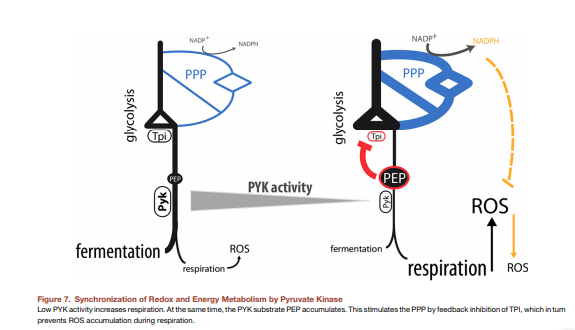

## <a> REDOX BIOLOGY IN HEALTH AND DISEASE</a>
###Índice de contenido###
1. [Organic Redox Cofactors](#1)
2. [](#2)
3. [](#3)
4. [](#4)
<br><br>
**Resumen:** <br>
**Responsable: **
<br> **--Felipe de Jesús Muñoz González--**
#### <a name="1"> </a>
#####Dr.
#####Dra.
### Organic Redox Cofactors
NAD(P)H, FMN
<image src="https://d2ufo47lrtsv5s.cloudfront.net/content/sci/350/6265/1208/F2.large.jpg">
Product Yields from the oxidation of sugars
In cytosol (glycolisis)
1 glucoese -> 2 NADH + 2 pyrubate +2ATP
In mitochondria (pyruvate dehydrogenase + TCGA)
2 pyruvate -> 2acetyl CoA +2 NADH
2 acetyl CoA -> NADH +2GADH<sub>2</sub> +2GTP
NADH is important for its redox potential
NADH -> hydrogen donor for enzyme reduction
- Alcohol dehydrogenase
- Isocitrate dehydrogenase
- Glycerol 3-phospahte dehydrogenase
Roles of NADPH
Electron/hydrogen donor for enzyne reduction
- Nitric oxide synthase
- Cyt. p450 reductase
- NADPH oxidase
- GSSG, thioredoxin and proxiredoxin reductases
NADP+ reduction
- Phentose phosphate pathway
- Malate-pyruvate shuttle
*The ppp is the major NADP utilization site in a cell.
NADPH production to synchronize redox and energy metabolism
-Aerobic glycolysis
Cancer & rapidly proliferating cells
-Oxidative phosphorliation
efficient but produces ROS

SIRT5 & SIRT7